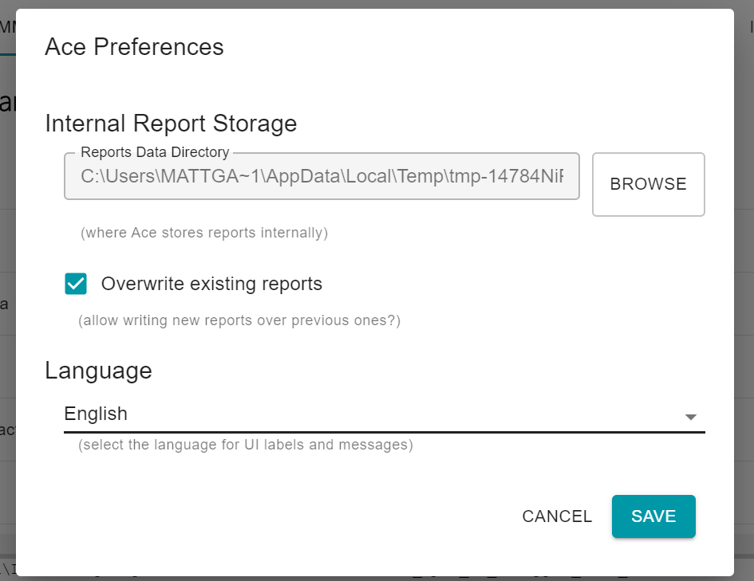
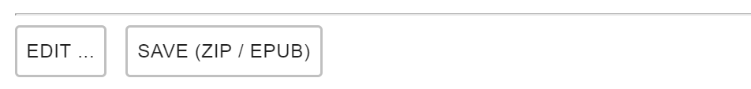

Note
This guide does not cover installing the Ace by DAISY program. Instructions on how to obtain and install Ace are available from the Ace app home page.
Table of Contents
Getting Started
Ace by DAISY is a free validation tool that checks EPUB publications for accessibility issues. It is based on the axe accessibility checker but has been tailored to run on EPUB publications and include EPUB-specific checks.
Ace has both a graphical user interface, as explained in this section, and can also be run from the command line. Both versions perform the same checks and output the same information, so it does not matter which is used.
Application Layout

When the Ace application is first opened, there are four key areas to note:
- At the top of the appplication is a menu bar that provides access to all the major features of the application, as well as important information about Ace and how to use it.
- Below the menu bar on the left-hand side is a quick access bar. Initially, only the option to evaluate a packaged EPUB publication is available (Check EPUB) along with the ability to change some of Ace's default settings (Settings). The Rerun and Export options become available as publications are validated.
- On the right-hand side of the quick access bar is the results area. When the application first launches, however, only a message that files and folders can be dragged and dropped onto the area to run the validator appears.
- Finally, at the bottom of the application is a message console. When Ace runs an evaluation, it emits various messages about the operations it is performing into this area. In general, the only time the messages in the console matter is when Ace encounters an internal problem. The errors may contain some useful information about what went wrong and help to include when reporting bugs.
Application Language
When the Ace application is first run it starts with English as the default language. The application can be localized so its interface and messages are in another language, however. (At the time of writing, French, Spanish and Brazilian Portuguese are also available.)
To change the interface, click on the Settings button in the quick links on the left-hand side of the application.
Note
The settings currently cannot be reached from the application menu at the top, but this is likely to change in the future release of Ace.
A new dialog window will open with the application settings that can be changed.
Select the new language for the application from the Language section at the bottom of the dialog and click the Save button. The Ace interface will automatically update to the new language and the new preference will be retained the next the program is opened.
Note
If the language is changed after running an evaluation, Ace will automatically rerun the evaluation again to update the report language. It is best to change languages first to avoid this wait.
Evaluating Files and Folders
There are four ways to start Ace checking an EPUB file or folder:
- A file or folder can be dragged and dropped into the results area.
- A file or folder can be selected from the links in the results area.
- A file can be selected from the "Check EPUB" link in the quick access bar.
- A file or folder can be selected from the File menu at the top of the application.
To use the drag and drop feature, the file or folder containing the publication needs to be on the desktop or open in a directory window. Click on the publication and keep the mouse button held down. It can now be dragged into the Ace application. The Ace display will change to show a dark gray background with a lighter gray dotted border, as shown in the following image.

Release the mouse button to drop the file and Ace will begin its evaluation.
The other options to start an evaluation all open either a file or folder selection dialog.

Locate and select the file or folder containing the publication and click the Check button to begin an evaluation.
Evaluation Reports

After Ace completes an evaluation, it displays a report containing the following tabs of data:
- Summary — the summary tab is displayed by default and contains individual and total counts of each type and severity of issue.
- Violations — the violations tab lists each of the issues that need fixing.
- Metadata — the metadata tab lists relevant package metadata found in the publication for review.
- Outlines — the outlines tab shows the table of contents and heading structure found in the publication.
- Images — the images tab shows any images found in the publication along with their alternative text and descriptions (when identifiable).
The following sections cover each of these tabs in more detail.
Report Summary

The summary table is a matrix that lists the types of violations down the first column (the y-axis) and the severity of the violations along the first row (the x-axis). As a result, each value of the matrix represents the count for one type and severity of issue (e.g., the first number in the grid represents critical WCAG 2 Level A violations).
The final row and column of the matrix provide the total counts for each separate type of issue and severity, with the number in the last row and column representing the total number of violations found.
Ace currently reports three types of violations: to WCAG 2 Level A (wcag2a), to WCAG 2 Level AA (wcag2aa), and to the specific requirements of the EPUB Accessibility specification (EPUB). It also identifies best practices, which are not violations but recommendations on possible improvements, and has an "other" category for messages that do not fit a specific category.
The severity classifications are an attempt to indicate the impact that the violations have on users. The classifications are only informational, however, and violations must be fixed regardless of the stated severity to ensure usability.
The summary table is helpful in terms of getting an overall picture of the violations in a publication, but it does not provide any useful information about what they are or how to fix them. That is where the Violations tab comes in.
Violations

The Ace Violations tab provides a table with detailed information about all the issues found in the publication.
The first two columns in the table identify the severity of the message (Impact) and what standard defines the problem (Ruleset).
The next column (Rule) identifies the short name of the rule and whether it is defined by Ace or the underlying axe validator. This field is useful for sorting issues of the same type, but it is not necessary to understand the short names — they are part of an internal classification system the program uses.
The Location column provides details about where the issue is located. It consists of a file name and EPUB Canonical Fragment identifier. Reading canonical fragment identifiers is not a simple task, so a snippet of the offending markup is also included. Opening the file and searching for the tagging is generally faster than trying to follow the fragment identifier. (The fragment identifiers may be used in a future version of Ace to support editing.)
Finally, the Details column provides information about how to solve the issue. The exact solution to the problem may not be determinable by machine, or there may be more than one possible solution, so the Details column may include many suggestions.
In addition to being able to sort the violations by each table column header, there is also set of filters at the top of table. Clicking on the "Filter By" label expands these options:

The difference between sorting the table and filtering is that only messages that match the selected criteria remain after filtering. For example, choosing "Critical" from the Impact filter list will remove all violations except the critical ones.
Metadata

The Metadata tab is the first of three review tabs Ace provides to help manually assess accessibility issues. This tab lists key metadata about the publication found in the package document.
The metadata table consists of three columns: the first identifies the name of the property, the second the property's value, and the third indicates if it is an accessibility metadata property.
In addition, if any accessibility metadata properties are not included, these are listed below the table:

It is not always required to include accessibility metadata listed as missing. Refer to the EPUB Accessibility specification for the list of required and recommended metadata.
At the bottom of the Metadata tab are buttons to edit the accessibility metadata and re-save the publication.
Clicking on the Edit button opens a new dialog with fields to edit/add the accessibility metadata properties.

After modifying the metadata in the dialog and saving it, a new packaged EPUB file can be generated by clicking on the Save (ZIP/ EPUB) button. After Ace packages the contents, it opens a new window with the folder containing the file.
Outlines

The outlines tab provides a side-by-side comparison of the structure of the publication as expressed in the table of contents, the heading structure in the markup and the HTML outline.
These outlines can be compared for discrepancies that need correcting (e.g., if the HTML tagging does not match the level of a heading in the table of contents, or if heading tags have not been used for items listed in the table of contents).
Note
The HTML outline is not implemented by browsers or assistive technologies. It is likely to be removed from Ace in a future release due to the general confusion it causes.
Images

The images tab provides a reference to all the images found in the publication.
The first column of the table shows the image and the second provides the value of the
alternative text (the alt attribute value).
If the aria-describedby attribute has been used to provided an extended
description, the value of the referenced content is listed in the third column.
If the image is in a figure tag, the value of the figure's caption is provided
in the fourth column.
Where the image is located in the publication is provided in the fifth column, and if an ARIA role is associated with the image it is provided in the final column.
Although this information is helpful for asssesing images, manual inspection will often still
be necessary. There are more ways to adequately describe an image than Ace currently
displays or can detect (e.g., the image may be described in the surrounding text or might be
associated by the aria-details attribute).
Exporting Reports

Ace provides the option to export the validation report either through the quick link or from the menu bar. When this option is selected, Ace generates a ZIP file containing the following files and folders:
report.html— An HTML version of the report tabs.report.json— A JSON-encoded file containing the report information.data— An optional folder containing any data extracted from the publicaton for the report (e.g., the images).
One key reason to export a report is to start a new evaluation in the SMART tool. The JSON file exported from Ace is used to prepopulate the manual evaluation form.
Another reason to export an evaluation is to open it in a browser. The HTML version may be easier to use in some cases than the application.
Rerunning Reports

Although Ace provides the option to rerun reports — either through the quick link or from the menu bar — it only runs on the temporary files the program creates. If the accessibility metadata is changed using the editor in the metadata tab, for example, the update publication can be rerun.
Note
Ace is expected to be updated to make the rerun option rerun the file or folder originally selected instead of the temporary folder, as the current behavior often leads to confusion.
Command Line
Calling Ace
Like the EPUBCheck tool, Ace can also be run from a command line interface, allowing it to be integrated into automated workflows. Some users also prefer the command line as it allows the HTML report to output and opened in a browser without having to go through the graphical interface.
Note
Refer to the EPUBCheck page for information on how to open a command line interface.
The simplest way to call Ace from the command line is to specify only the name of the file or folder to validate. When invoked this way, however, all the output of the program (i.e., the processing messages and final JSON report) is written back to the command line. The following example depicts a truncated view of the output, which often runs on for hundreds of lines:
> ace accessible_epub_3.epub
info: Processing C:\epubs\accessible_epub_3.epub
info: Checking package...
info: - EPUB\package.opf: No issues found
...
info: Consolidating results...
{
"dct:title": "Ace Report",
"dct:description": "Report on automated accessibility checks for EPUB",
...
}
info: Done.
The more typical way to call Ace is to include an output directory so that both the JSON and HTML
reports are saved. When the --outdir argument is set, Ace
will output the reports to the specified location. For example, to output the files to a new
folder called ace_report, Ace can be invoked like this:
> ace accessible_epub_3.epub --outdir ace_report
Note, however, that by not specifying a full path for the output directory, the directory will be created relative to wherever the command line interface is currently located. (See the EPUBCheck page for how to change directories.)
When an output directory is specified, Ace only writes processing messages to the command line. Instead of outputting the JSON report at the end, it will note that the JSON and HTML report files have been successfully saved:
info: Consolidating results... info: Copying data info: Saving JSON report info: Saving HTML report info: Done.
Arguments
The following list covers the most common arguments used to invoke Ace. For a complete list, run Ace from the command line without specifying any arguments.
- Output directory (
--outdiror-o) -
As explained in the preceding section on running Ace from the command line, the output directory argument is used to indicate where to write the report files.
> ace accessible_epub_3.epub -o ace_report
- Force output (
--forceor-f) -
The force argument is used to overwrite existing report files (e.g., when you run Ace again after correcting issues).
> ace accessible_epub_3.epub -o ace_report -f
If an output directory is specified that already contains report files, Ace will not run unless this argument is specified to avoid accidentally deleting data.
- Verbose output (
--verboseor-V) -
The verbose output argument provides more detailed information about the validation actions that Ace is performing. It is typically used to help debug potential issues with the program (e.g., if Ace crashes during validation, using verbose output may reveal more useful information about where and why it crashed).
> ace accessible_epub_3.epub --verbose
Note that the shorthand form of the argument is a capital "V"; specifying a lowercase "v" outputs the version of Ace.
The verbose argument only affects the messages Ace writes to the command line. It does not affect the information in the JSON or HTML reports.
- Silent output (
--silentor-s) -
The silent output option is the opposite of the verbose argument: it suppresses all the informational messages Ace normally outputs (i.e., that begin with the
info:prefix).> ace accessible_epub_3.epub -s
This option does not suppress critical errors. If Ace encounters a problem validating a publication, the errors will be printed to the command line.
The silent argument only affects the messages Ace writes to the command line. It does not affect the information in the JSON or HTML reports.
Limitations
Although the Ace tool is effective at finding accessibility issues, there are a couple of limitations to be aware of:
- Passing Ace validation is not the same as meeting requirements of WCAG. A clean report only means the issues Ace can check for have passed (i.e., the publication stil may not be accessible). A complete list of rules that Ace can check for is maintained on the Ace web site.
- Ace is not currently integrated with EPUBCheck, so publications also need to be validated with that tool to ensure conformance to the standard.
To thoroughly check a publication for accessibility, and to make a claim of conformance to WCAG, manual inspection is also required. The SMART tool fits into the validation process.
Related Links
- Ace by DAISY
- Ace — Getting Started